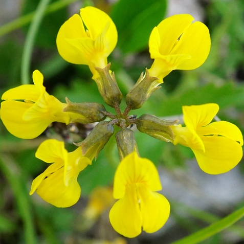

Hippocrepis comosa
Common name
Horseshoe Vetch
Deutscher Name
Gewöhnlicher Hufeisenklee (hoof irons)
Family
Fabaceae
Family common name
Legume Family
Blooms
May - July
Habitat
Dry, stony grassland. Calcareous soils to 2200 m.
Range Map